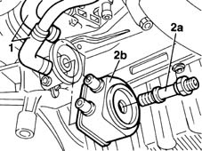

1084C10 engine oil heat exchanger - r + r
- Path
- Procedures > 10 ENGINE UNIT > 1084 ENGINE LUBRICATION SYSTEM > 1084C engine oil cooling circuit > 1084C10 engine oil heat exchanger - r + r
- Kind
- repair procedure (removal / refitting; the operation number is the code)
- Applies to
- engines: 1.9 JTD 8V; all production periods
- Interactive page
- https://sloeber94.github.io/elrnDB-fMltpl/en/#/2891443
Applies to: engines: 1.9 JTD 8V; all production periods
 Removing
Removing
 Refitting
RefittingPosition a suitable container beneath the heat exchanger to collect the coolant fluid.
1. Disconnect the engine coolant inlet and outlet pipes to the heat exchanger.
2. Unscrew retaining pin (2a) and remove heat exchanger (2b).

Applies to: engines: 1.9 JTD 8V; all production periods
Refitting
RemovingFit the heat exchanger to the front oil pump cover.
Tighten the heat exchanger retaining pin to torque.
 | Fastening | Component | Ø | Value (daNm) |
|---|---|---|---|---|
- | Connector | ENGINE OIL HEAT EXCHANGER | M20 | 6 |
Connect the engine coolant inlet and outlet pipes to the engine oil heat exchanger.
Check the amount of coolant present in the engine.
Top if using the same coolant if necessary.